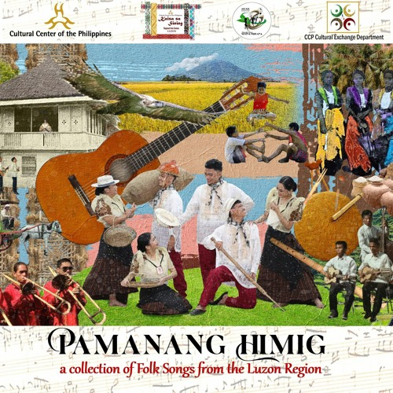

“Malinac Lay Labi” is a traditional folk song from Pangasinan, a province in the Philippines. It is celebrated for its hauntingly beautiful melody and deeply emotional lyrics, expressing longing and devotion. The song holds a special place in Pangasinense cultural identity, often regarded as an emblem of regional pride and heritage.
Fun Facts
- The song’s title literally means “Calm is the Night”.
- It is often taught in schools as part of cultural education.
- Modern artists and choirs have created contemporary renditions of the song.
Cultural Background

“Malinac Lay Labi” translates roughly to “A Bright Night.” The song embodies traditional Pangasinense lyrical style, blending poetic imagery of night and nature with the personal emotions of yearning for a beloved. Passed down orally through generations, it remains one of the best-known examples of Pangasinan’s pre-colonial musical heritage.
Musical Characteristics
Typically performed in a slow, lilting tempo, the song features simple melodic structures and repetitive phrasing characteristic of rural Philippine folk traditions. Performances often use traditional instruments such as the guitar or bandurria, though modern renditions may include choral or orchestral arrangements.
Cultural Significance
“Malinac Lay Labi” functions as both a love song and a nostalgic expression of home, especially for Pangasinenses living away from their province. It has been included in academic anthologies and folk music archives, symbolizing the enduring strength of regional languages and traditions within the broader Filipino cultural mosaic.
Elders recount that villagers used to gather outside under the moonlight, singing Malinac Lay Labi together. The melody would echo across rice fields and rivers, fostering a sense of community and calm. This tradition helped ensure the song was passed down through generations, preserving a shared cultural memory of Pangasinan’s landscapes and people.